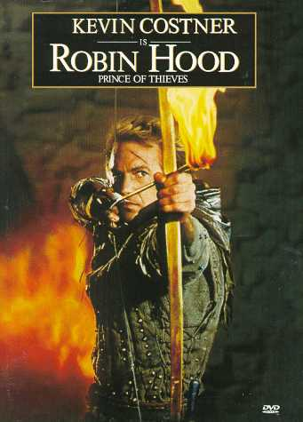
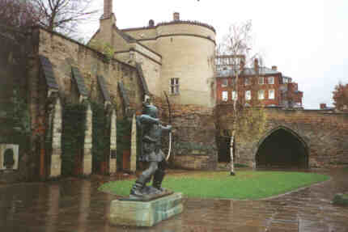
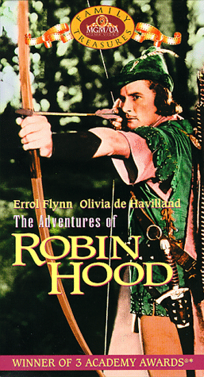

|

Texto de
Susana
Lopes de Alexandria
A
lenda de Robin Hood
|

|
"QPid" pegou carona
na onda do filme Robin Hood, estrelado por Kevin Costner,
que estreou no mesmo ano (1991) em que o episódio foi ao ar nos
Estados Unidos. Todo mundo já ouviu falar de Robin Hood, o
"príncipe dos ladrões" que roubava dos ricos para dar
aos pobres e se escondia com seu bando na floresta de Sherwood.
Robin Hood é uma figura histórica ou meramente uma lenda
medieval?
 Quase tudo o que se sabe de Robin Hood veio das baladas e contos medievais, todos escritos antes de 1550, que se perpetuaram ao longo dos séculos. Embora Robin Hood tenha o status de lenda, muitos acham que há razões para acreditar que ele pode ter sido uma figura histórica, e pesquisadores encontraram várias provas de que existiu um fora-da-lei de verdade chamado Robin Hood. As histórias de Robin Hood descrevem-no como um destemido fora-da-lei, liderando um bando conhecido como "merry men" (literalmente, "homens alegres") contra a tirania do Príncipe João Sem Terra, do xerife de Nottingham (o vilão "interpretado" por Q, no episódio "QPid") e Sir Guy de Gisbourne. Os principais personagens do bando são Little John (Pequeno John, conhecido por seu tamanho e força, que no episódio é encarnado pelo klingon Worf), Friar Tuck (Frade Tuck, feito pelo andróide Data), Maid Marian (Vash), Will Scarlet, Allan Adale (o trovador feito por Geordi La Forge) e Much the Miller. Worf , obviamente, não gostou de ser transformado num dos personagens das aventuras de Robin Hood e protestou: "I am NOT a merry man!" Exímio arqueiro, Robin vivia uma vida de aventuras e escondendo-se com seu bando na Floresta de Sherwood. As histórias de Robin foram contadas e recontadas por mais de 600 anos. Na época de Robin, poucas pessoas sabiam ler e escrever. Conseqüentemente, muito pouco foi escrito sobre esse herói.  As primeiras baladas relatando as aventuras de Robin Hood surgiram no século 14. Há evidências de que, se realmente existiu um Robin Hood, foi no século 13, sob os reinados de Ricardo Coração de Leão e João Sem Terra). Por exemplo, num documento do tribunal de York de 1225, há uma referência a um certo "Robert Hod", fugitivo arrendatário do arcebispo de York. Em 1227 ele aparece como "Hobbhod". Outra referência interessante surgiu nos anos 1850 com a descoberta de um documento dando detalhes sobre um homem que vivia nas florestas, filho de Adam Hood, nascido em 1280, e que se casou com Matilda, em Yorkshire. Teriam Robert e Matilda se mudado para Sherwood, tornando-se Robin e Marian? Existem pelo menos oito homens que, antes do ano 1300, receberam o apelido de "Robinhood", cinco das quais eram foras-da-lei acusados de atividades criminosas. Daí, pode-se especular que, naquela época, as atividades do Robin Hood de verdade eram bem conhecidas. Qualquer um que conheça Robin Hood
imediatamente o associa a Nottingham e à Floresta de
Sherwood. Mas estes são realmente os cenários onde acontecem
as aventuras do herói? Para os habitantes de Nottingham, esta tem
sido uma das grandes controvérsias dos  Entretanto, as primeiras baladas também falam claramente de Sherwood e Nottingham. Embora algumas histórias realmente comecem em Yorkshire, é em Nottingham que se passam os eventos principais. Outro dado importante é que o principal inimigo de Robin Hood é, sem dúvida, o xerife de Nottingham, que não tinha jurisdição fora de Nottinghamshire and Derbyshire, o que portanto exclui Yorkshire e Barnsdale. O episódio "QPid" coloca um pouco de lenha nessa fogueira, quando o capitão Picard, antes de derrotar seu adversário na espada, diz-lhe que Robin Hood não era de Nottingham. O fato é que Nottingham nem se abalou com a polêmica e continua a ostentar, orgulhosa, a estátua de Robin Hood em frente ao castelo da cidade. Talvez nunca saibamos ao certo de
onde surgiram as histórias sobre Robin Hood, se eram reais ou
apenas fruto do desejo reprimido de camponeses medievais por um
herói do povo, ou, quem sabe, um deus da floresta reverenciado na
Inglaterra pré-cristã. Enquanto isso, a lenda continuará dando
origem a mais filmes - como o cultuado "As Aventuras de
Robin Hood" (1938), com Errol Flynn - e inspirando episódios
de tevê como este de Jornada nas Estrelas.
|